The International Genetically Engineered Machine (iGEM) competition is a worldwide synthetic biology competition
that was initially aimed at undergraduate university students, but has since expanded to include divisions for high school students, entrepreneurs, and community laboratories, as well as 'overgraduates'.
Matlab generated metabolic network of 20 amino acids
Background
Flux Balance Analysis(FBA) is the most widely used computational method for
simulating metabolism in genome-scale reconstructions of metabolic networks. Genomescale
metabolic pathway modeling, or flux balance analysis uses a stoichiometric matrix
of steady state metabolic reactions. Metabolic reactions are mediated by series
of "enzymes", whose functional diversity can dramatically increase the rates of reactions
in the metabolic pathway. Flux balance analysis uses Linear Programming method
that computes the maximum(or minimum) objective function given constraints of linear
equations. Controlling the amount of enzymes can play the key role in assessing the
possible range of metabolic flux distributions. In this research project, by controlling
the coefficients in each equation of metaobolic reactions, I observed the changed results
of output.
Modified FBA implementation
Linear Programming and simple FBA
In FBA modeling, LP program has the form of:
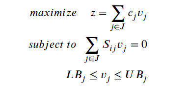
where 𝐯 represents the vector of fluxes, S is a matrix of coefficients, 𝑖 is the number of
equations and 𝑗 denotes the number of fluxes in each equation 𝑖. S is known, while we
have to find out 𝐯.
Flux balance analysis relied on an important assumption that metabolic model
reaches steady-state, which can be represented as the dot product of stoichiomatrix
coefficients (matrix S) and vector fluxes 𝐯 as 0.
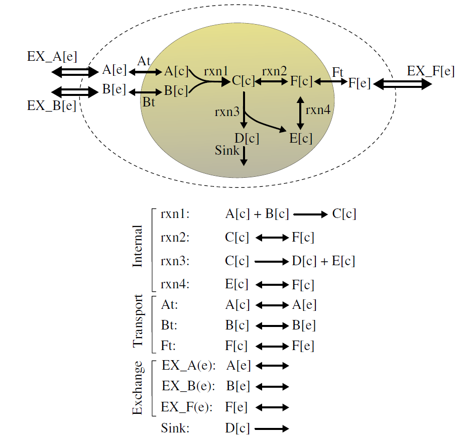
The demonstration of metabolic network
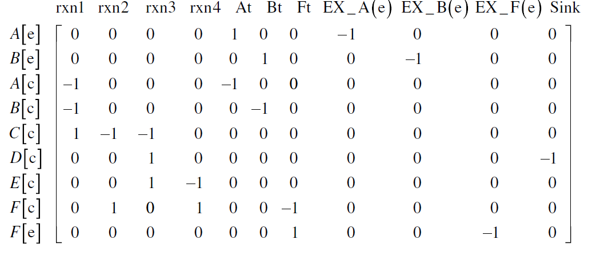
stoichiomatrix
After assembling the reactions into the matrix S, bounds of each reaction is determined
by three cases: reaction occurs only in forward direction(𝐿𝐵𝑗 = 0,𝑅𝐵𝑗 =
𝑀), or only in backward direction(𝐿𝐵𝑗 = −𝑀,𝑅𝐵𝑗 = 0) or bidirectional(𝐿𝐵𝑗 =
−𝑀,𝑅𝐵𝑗 = 𝑀).
A simple FBA example and problem
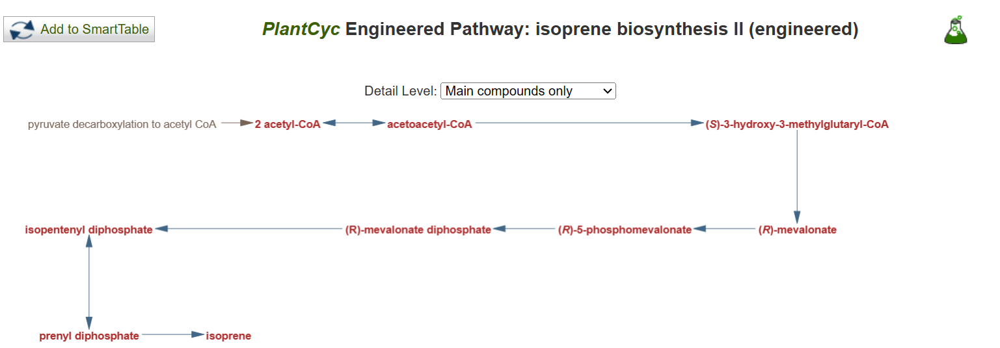
A simple metabolic pathway example
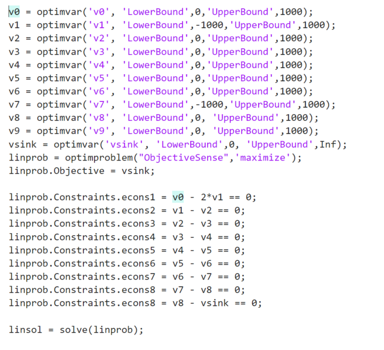
FBA modeling result of Isoprene Biosynthesis
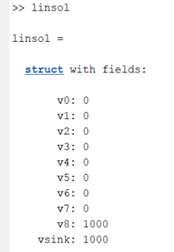
The result of FBA modeling of Isoprene Biosyntheis II shows that objective function of maximizing vsink (= isoprene
output flux) is always 1000, which is equal to upper bound value. This result can be
explained by initial input amount flowing through the without any leakage straight to
the sink(=1000).
20 Amino Acid map
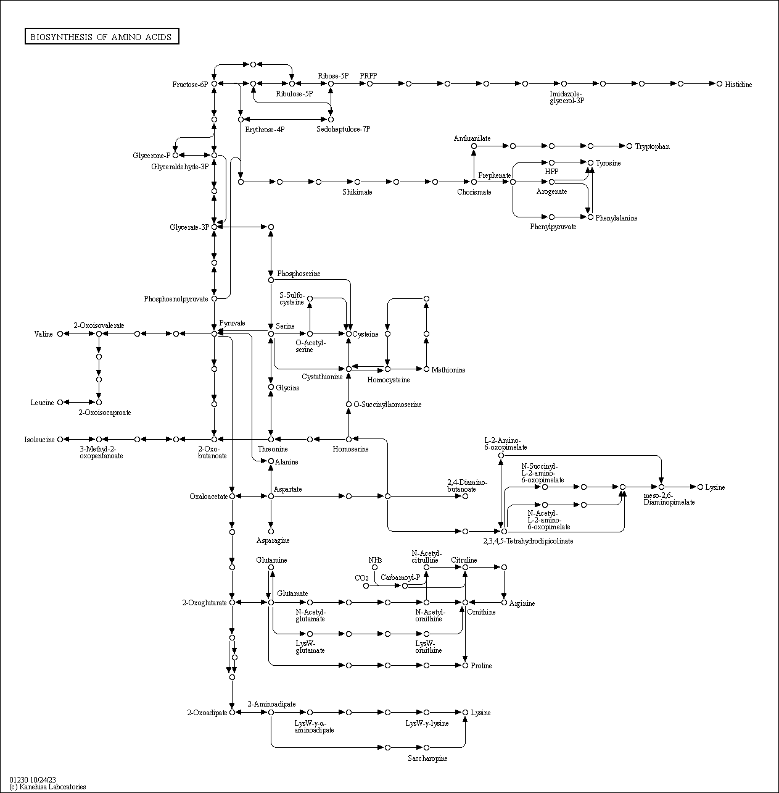
Image of 20 amino acids map (https://www.kegg.jp/pathway/)
Using MATLAB and GurobiPy, 135 reactions and 191 metabolites were analyzed for
flux balance analysis. MATLAB’s sbiomodel and its getstoichmatrix function returns
stoichiomatrix of the entire model when all reactions are listed.
The result of FBA modeling of 20 amino acids are:
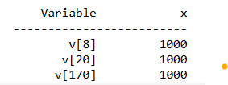
Non zero fluxes after modeling
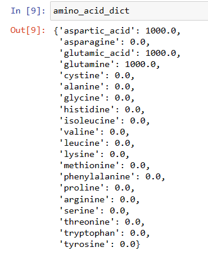
the result output of 20 Amino acids
The result shows that only 3 fluxes 𝐯 out of 191 fluxes are not zeros and 188 fluxes
turned out to be zero. This result that most of the fluxes turned out to be zero are that
in (+) and out(-) of flow of each metabolite should be equal based on the steady state
formula. So if the initial input amount is 1000 somewhere in the source vertex, the sink
in the network will return 1000 as well after traveling the network map.
Change of input enzymes (coefficient of stoichiomatrix) and results
In order to avoid the zeros in output in FBA modeling, I tried a method of changing
some coefficients in stoichiometric matrix S. In other words, if there is a reaction of
𝐴+𝐵 → 𝐶 +𝐷, I tried doubling or tripling the coefficients like 𝐴+2𝐵 → 𝐶 +𝐷 , and
it can be same as doubling the input of metabolite B. In addition, in order to make the
change of enzymes flow into each amino acid work, I deleted the steady-state equations
for 20 amino acids in the stoichiometric matrix
After randomly doubling 100 coefficients the fluxes that are not zeros are :
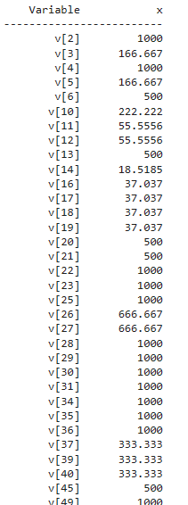
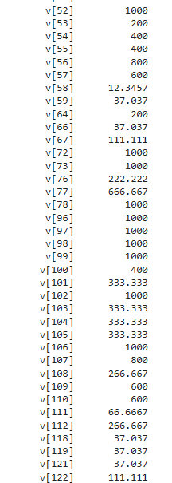
Non-zero fluxes after modeling
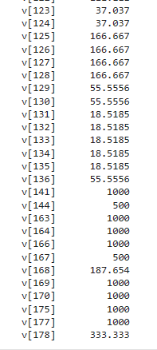
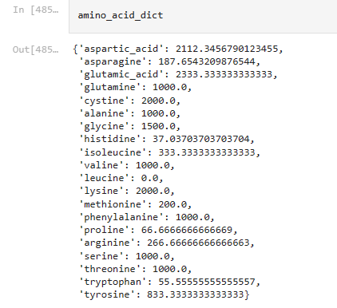
the result output of 20 Amino acids
Changing coefficients of input enzymes of specific amino acid and results
Putting more enzymes from Cystathionine to Cystine
Increasing the yellow arrow(coefficient)
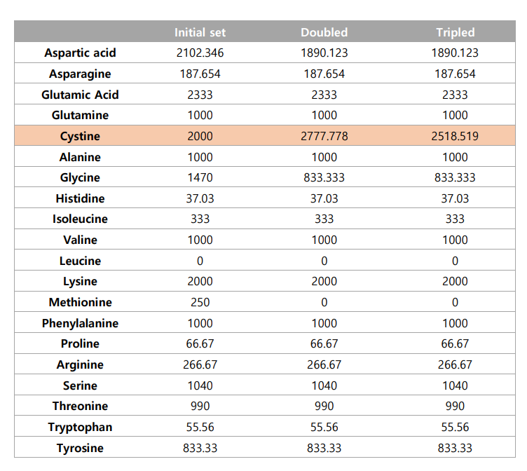
Increased output of cysteine
Putting more enzymes from Phenylalanine to Tyrosine
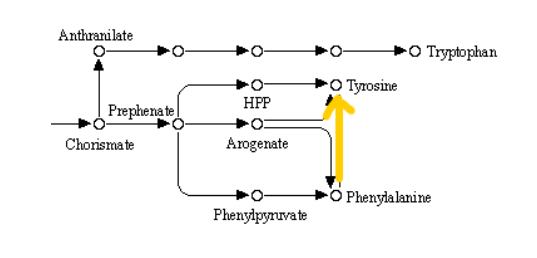
Increasing the yellow arrow(coefficient)
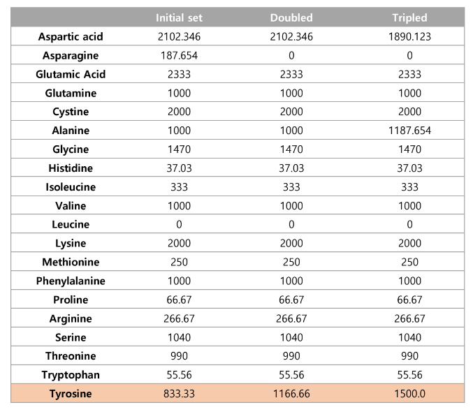
Increased output of Tyrosine
Putting more enzymes from Indoleglycerol phosphate to Tryptophan
Costas D. Maranas, Ali R. Zomorrodi, Optimization
Methods in Metabolic Networks, WILEY, 2016.
Roy H. Kwon, Introduction to Linear Optimization and Extensions with MATLAB, CRC Press, 2014
Mokhtar S. Bazaraa, John J. Jarvis, HanifD.Sherali, Linear Programming and Network Flows, WILEY, 2010.
Xueyang Feng, A Powerpoint slide from 'Metabolic Flux Analysis by MATLAB', Dept. of Energy, Environmental \& Chemical Engineering
Washington University in St. Louis
David L. Nelson, Michael M. Cox, Principles of Biochemistry, New York : W.H. Freeman, 2008.